周志 2026/11/24
1. 三个简单模型的迁移训练与 SLICY 验证
以 V7comb 最佳参数为起点，加入 LayerCircle、LayerCylinder、ThreeAngle 三个简单几何，与五个原有 CAD 族的训练变体组成 8 个训练几何进行迁移训练，如图所示。每个几何均为 1 GHz、$\theta=45^\circ$、$\phi=0^\circ:10^\circ:180^\circ$ 的 19 个方向，训练集共 152 个样本。
迁移训练中的 8 个几何与 SLICY(Test)
 case1 |
 case2 |
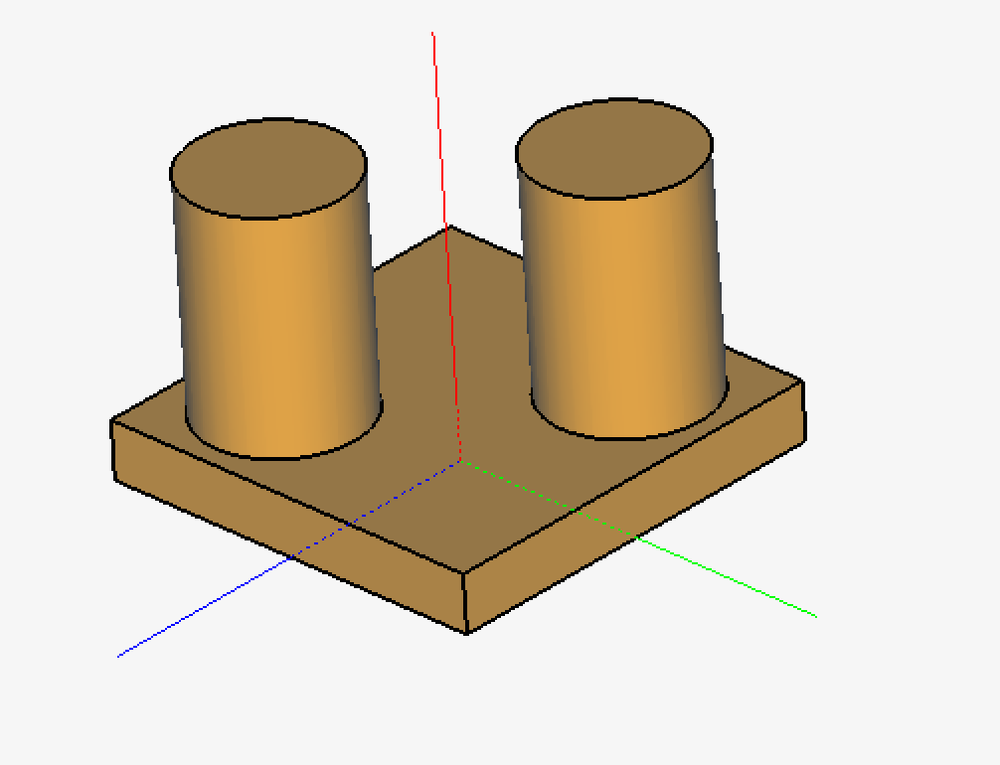 case3 |
 case4 |
 case5 |
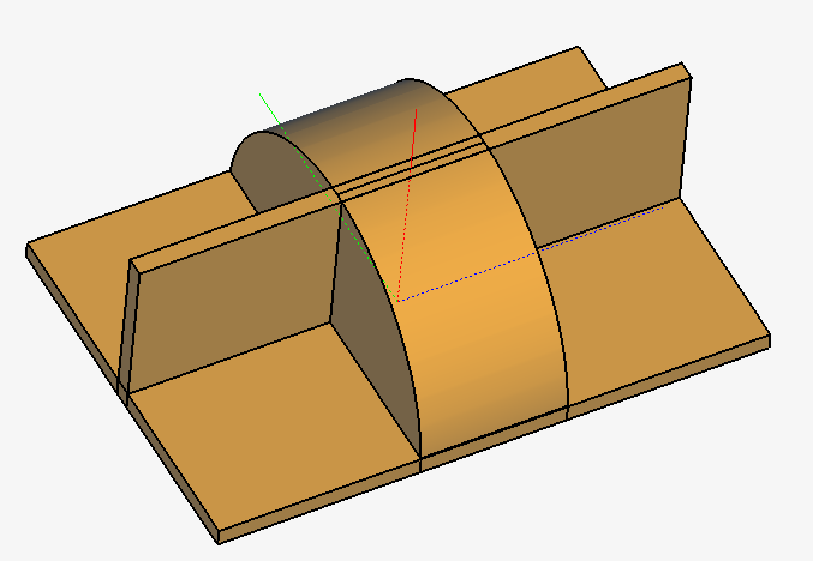 LayerCircle |
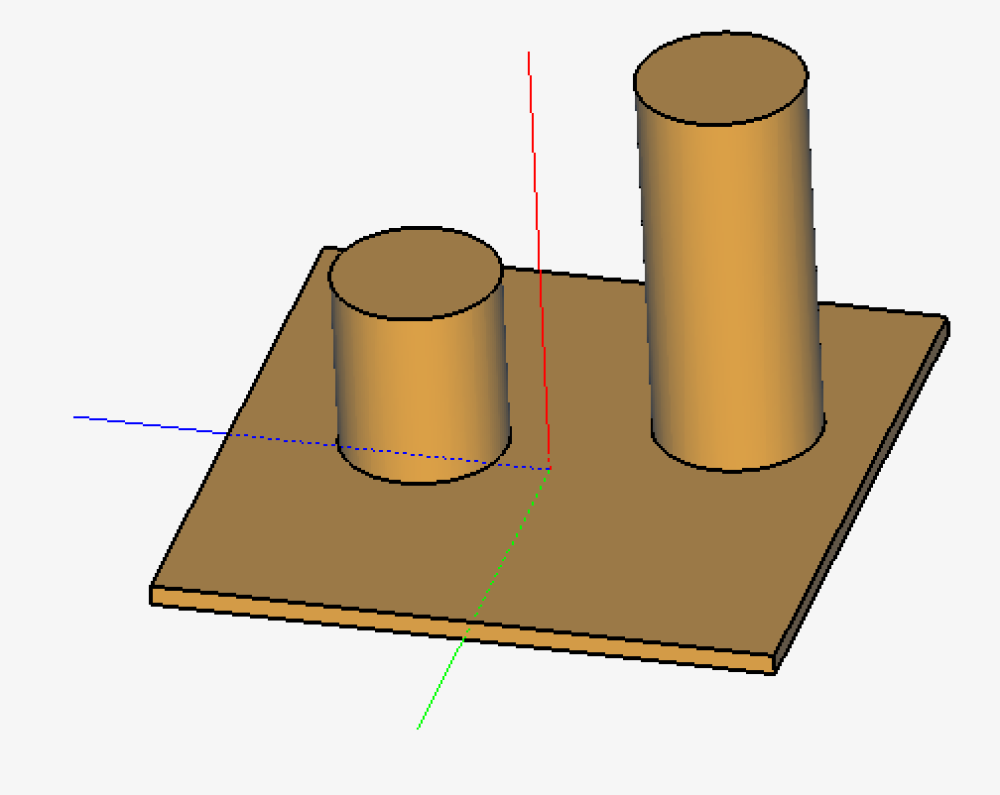 LayerCylinder |
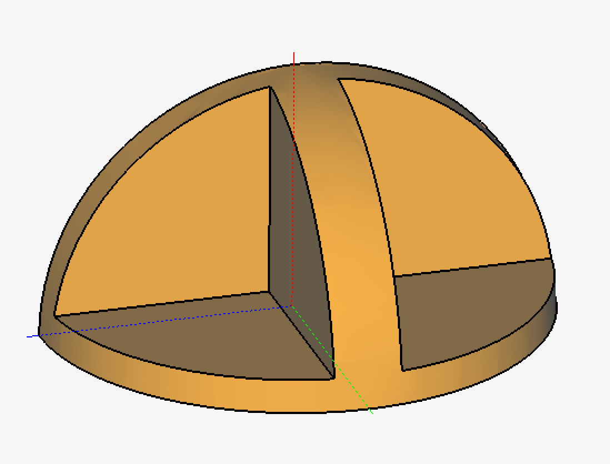 ThreeAngle |
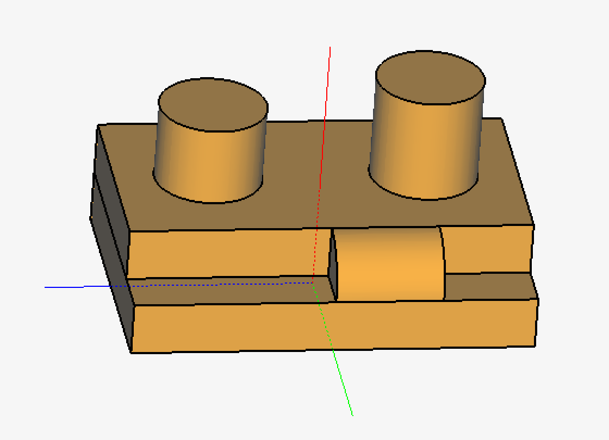 SLICY(Test) |
| 训练起点 | 新增训练几何 | 训练样本 | 验证与选参 | 最佳 epoch | 当轮 train / val 修正量 MSE |
|---|---|---|---|---|---|
| V7comb 最佳参数 | LayerCircle、LayerCylinder、ThreeAngle | 8 几何 × 19 方向 = 152 | SLICY，19 方向 | 18 | 0.009177404 / 0.048993025 |
同一批 SLICY 数据有 74,762 个三角元。完整复电流相对误差先按方向计算，再对 19 个方向等权平均。单站 RCS RMSE 在 19 个 dBsm 点上以 MoM 为参照计算。
| 方法 | 平均复电流相对误差 | 单站 RCS RMSE |
|---|---|---|
| PO | 65.03% | 17.21 dB |
| V7comb | 53.12% | 3.82 dB |
| addTrain | 37.35% | 4.02 dB |
2. caseOther 新几何泛化观察
在 caseOther 新建九个与 V7comb、addTrain 训练及验证选参均无关的几何，分别以两份最佳参数纯推理。每个目标在 1 GHz、相同极化和 $\eta_0$ 归一化下，采用 $\theta=45^\circ$、$\phi=0^\circ:10^\circ:180^\circ$ 共 19 个方向。Satellite2 是原 satellite 目录改名后的同一几何；PlaneF22 是当前约 2.45 m 长的缩比网格。这些是陆续完成的泛化尝试，尚非预先封存的最终测试集。
下表电流误差是每方向完整复电流相对 L2 误差的平均值；RCS 是相对 MoM 的 19 点 dBsm RMSE，全部由三角元电流积分估算。两项均越低越好。✘ 表示 V7comb 或 addTrain 至少有一项总体指标高于 PO；其余目标两份模型的两项总体指标均低于 PO。个别方向的退化仍可存在，详见 record.md“序号22”。
| 序号 | 目标 | PO 电流误差 | V7comb 电流误差 | addTrain 电流误差 | PO RCS RMSE | V7comb RCS RMSE | addTrain RCS RMSE |
|---|---|---|---|---|---|---|---|
| 1 | CombFlare | 65.78% | 47.80% | 42.22% | 12.98 dB | 2.77 dB | 3.30 dB |
| 2 | Satellite2 | 57.14% | 51.99% | 47.12% | 11.61 dB | 8.16 dB | 6.81 dB |
| 3 | Satellite3 | 65.98% | 56.61% | 48.83% | 17.07 dB | 4.49 dB | 3.54 dB |
| 4 | Satellite4 | 62.71% | 54.09% | 43.25% | 24.47 dB | 5.91 dB | 2.71 dB |
| 5 ✘ | SatelliteCylinder | 55.36% | 56.11% | 44.25% | 11.72 dB | 6.14 dB | 4.41 dB |
| 6 ✘ | SatelliteSphere | 52.66% | 57.28% | 49.31% | 2.42 dB | 4.75 dB | 3.41 dB |
| 7 | PlaneF22 | 68.99% | 63.60% | 61.88% | 8.30 dB | 5.36 dB | 6.89 dB |
| 8 | TrihedralAngle | 71.27% | 40.14% | 36.05% | 26.04 dB | 7.53 dB | 7.84 dB |
| 9 | Rocket | 60.06% | 54.21% | 49.71% | 8.81 dB | 6.81 dB | 4.98 dB |
模型截图（序号对应上表）
 序号 1 |
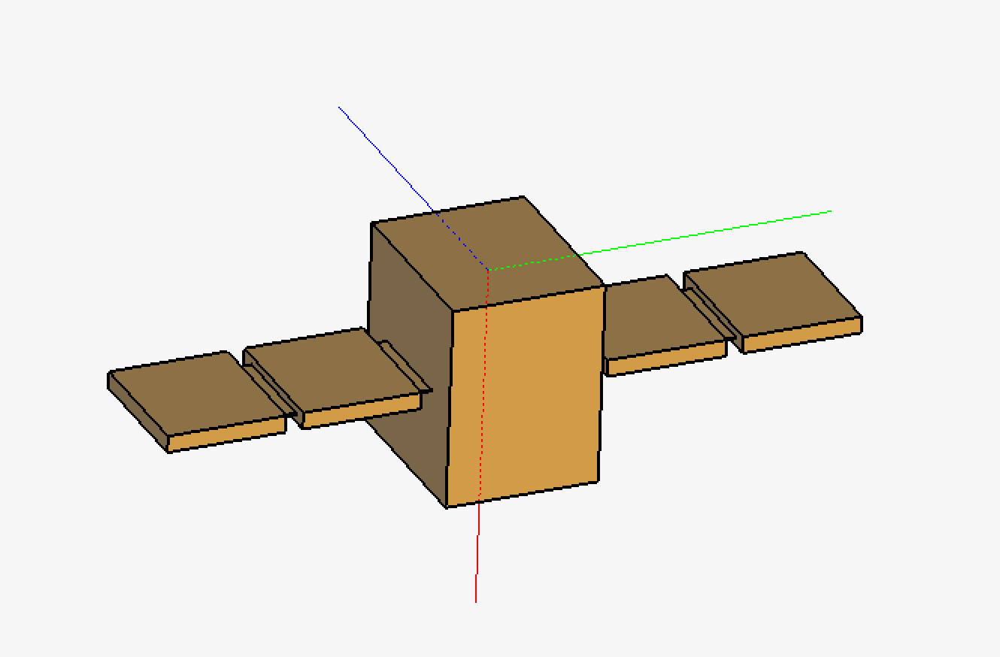 序号 2 |
 序号 3 |
 序号 4 |
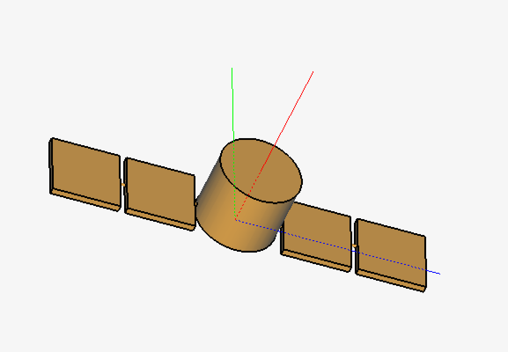 序号 5 |
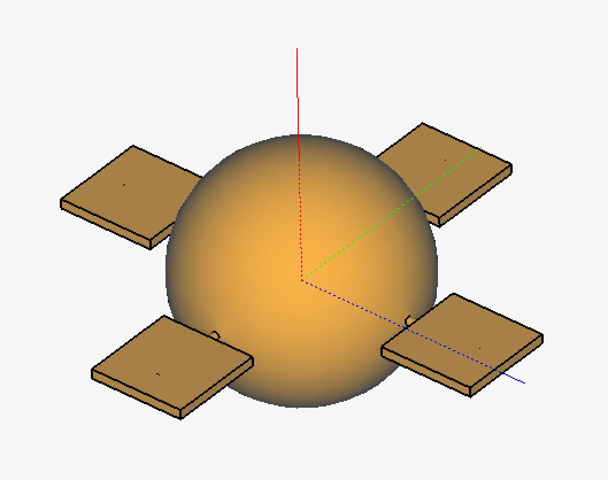 序号 6 |
 序号 7 |
 序号 8 |
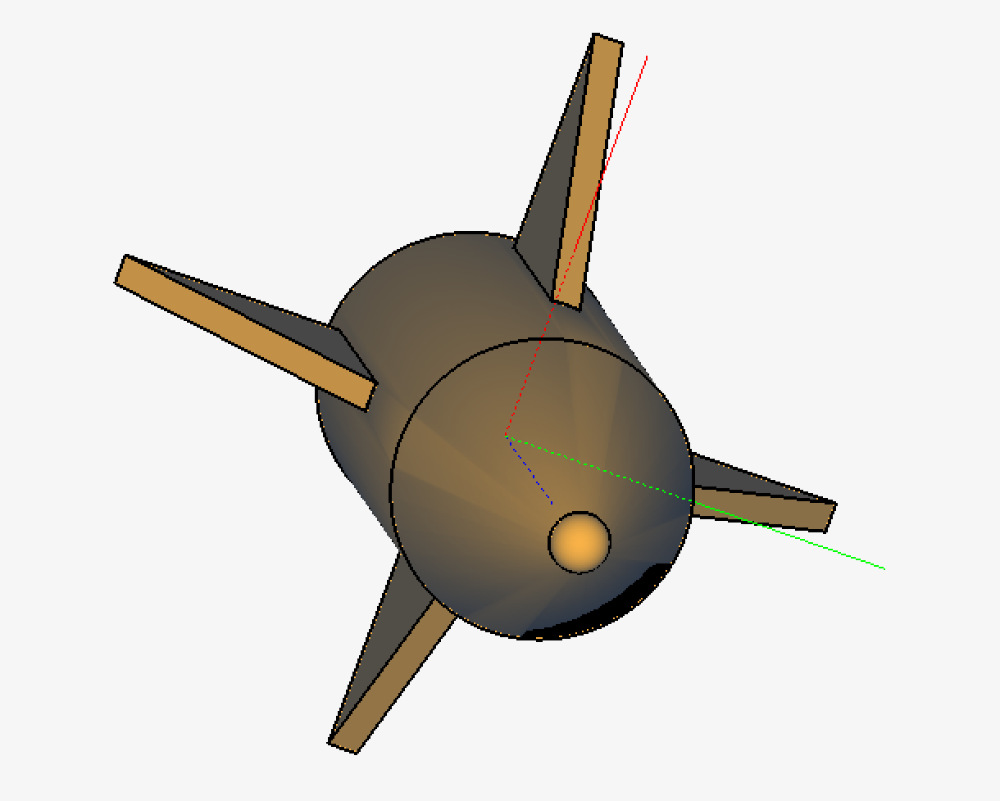 序号 9 |
可能是因为 V7comb 对原来的数据集过拟合，导致对其他模型的预测不太好；经过三个简单几何模型的迁移训练后，电流误差普遍有所改善。
3. Satellite4 的旋转与平移泛化
在 Satellite4 原模型的基础上，另外测试了一个旋转模型和两个平移模型：原版 Satellite4、旋转 $-60^\circ$ 的 Satellite4_-60、平移模型 Satellite4_u1 和 Satellite4_u2。四个模型均使用 $\theta=45^\circ$、$\phi=0^\circ:10^\circ:180^\circ$ 的 19 个方向，分别使用 V7comb 和 addTrain 参数进行预测。
| 序号 | 模型 | PO 电流误差 | V7comb 电流误差 | addTrain 电流误差 | PO RCS RMSE | V7comb RCS RMSE | addTrain RCS RMSE |
|---|---|---|---|---|---|---|---|
| 1 | Satellite4 | 62.71% | 54.09% | 43.25% | 24.47 dB | 5.91 dB | 2.71 dB |
| 2 | Satellite4_-60 | 64.23% | 68.72% | 65.07% | 17.208 dB | 7.966 dB | 5.257 dB |
| 3 | Satellite4_u1 | 62.73% | 60.43% | 49.11% | 24.471 dB | 5.628 dB | 4.532 dB |
| 4 | Satellite4_u2 | 62.72% | 69.13% | 58.10% | 24.467 dB | 8.168 dB | 5.775 dB |
模型截图（序号对应上表）
序号 1 |
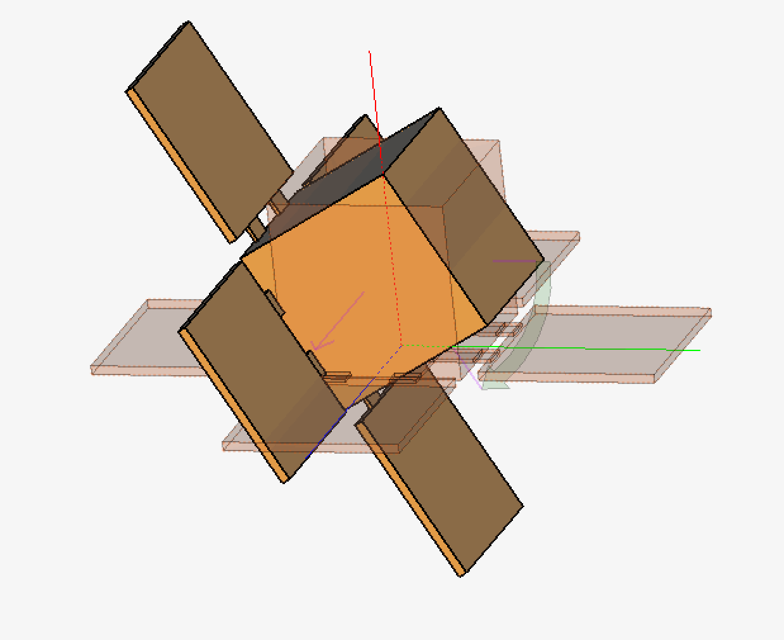 序号 2 |
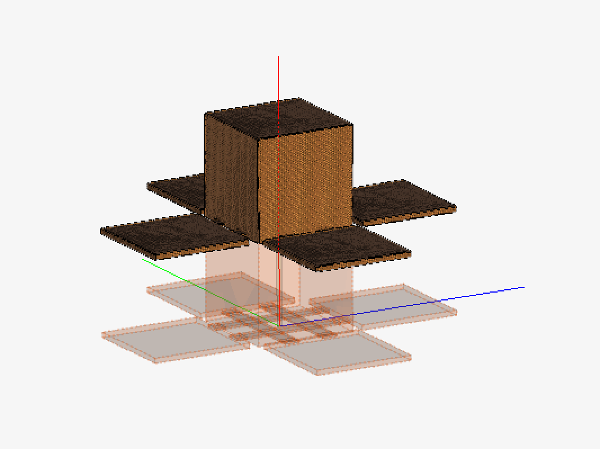 序号 3 |
 序号 4 |